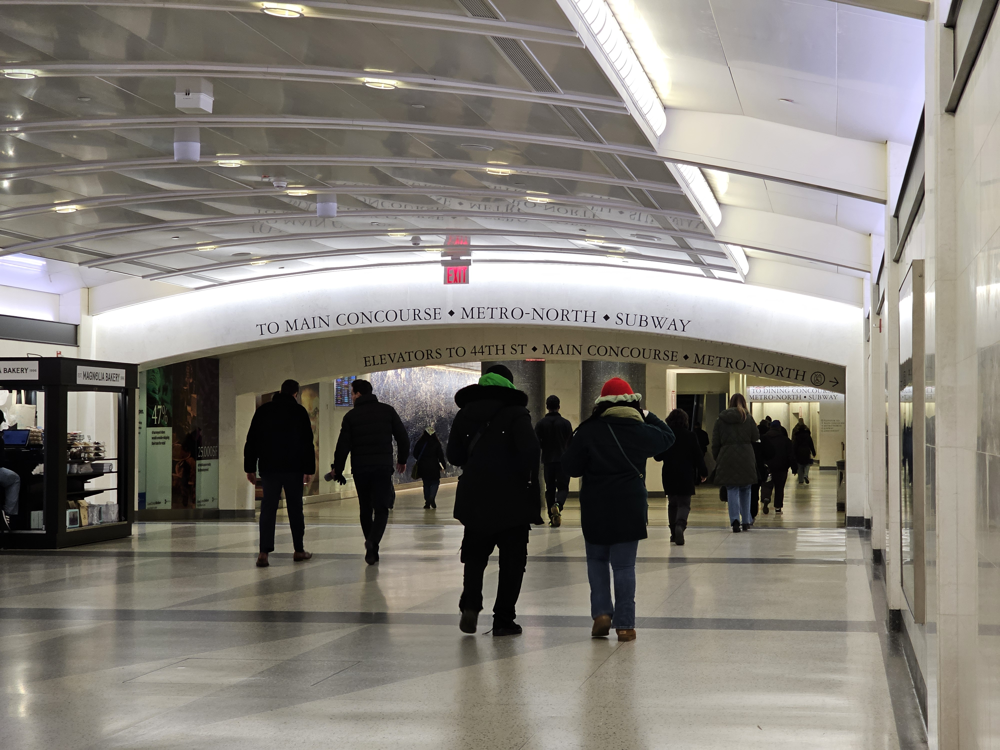
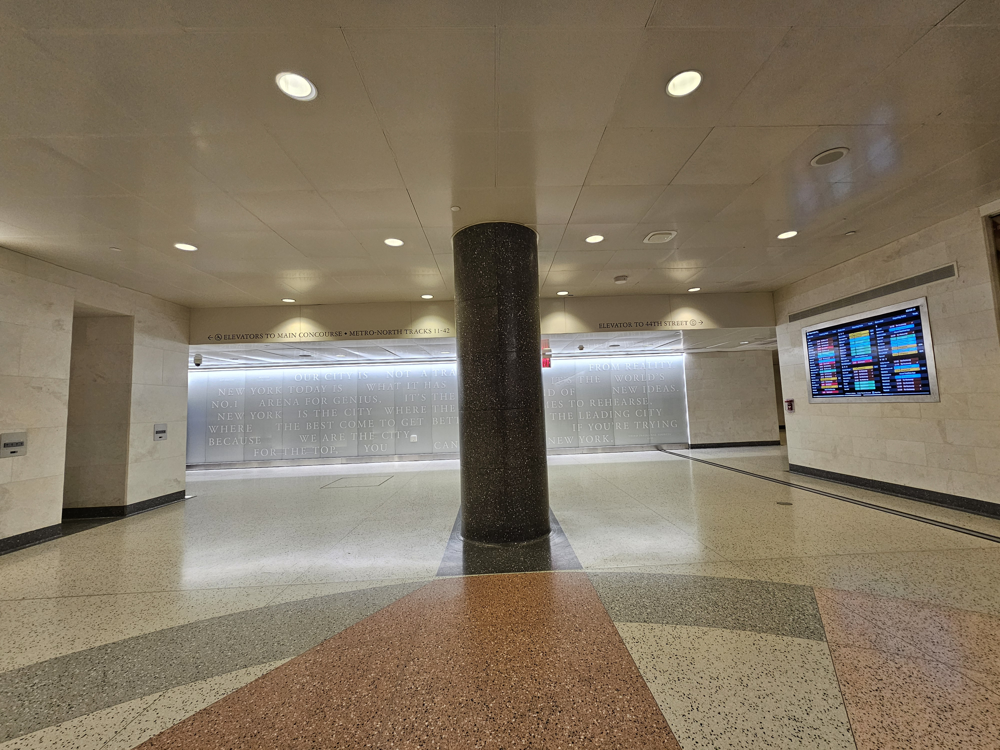

By Walking
- Exit from the platform your LIRR train arrives on and head to the mezzanine. Then, take the 45th Street escalators to the concourse.
- Once there, walk to the 44th Street area. Then, turn right.
- Here, you will find signs to 2 elevators. Take the elevator that says Elevator to 44th St to the right.
- Once on street level, turn right and Walk West along 44th Street to 5th Avenue.
- Then make a LEFT at 44th Street and 5th Avenue, and walk SOUTH along 5th Avenue until you reach 42nd Street.
- Once you reach 42nd Street and 5th Avenue, walk along 42nd Street, where you will see Bryant Park.


Some Tips and Tricks
- At Grand Central, there is a set of elevatorsthat will take you up from the mezzanine to the concourse.
- It's located between the 46th Street and 47th Street escalator banks on the mezzanine, so look for signs.
Expected Time Taken - Minutes
- To get onto street level from the LIRR tracks, it will take you roughly 6-7 minutes depending on your speed and method you chose.
- To get from the street level (near 44th and Madison) to Bryant Park, it will take roughly 8 minutes, depending on your speed.
Map Overview
Below is a map showing the route from Grand Central (when you get onto street level) to Bryant Park.
View A Google Maps Route from Grand Central (44th St and Madison Avenue) to Bryant Park
Bryant Park